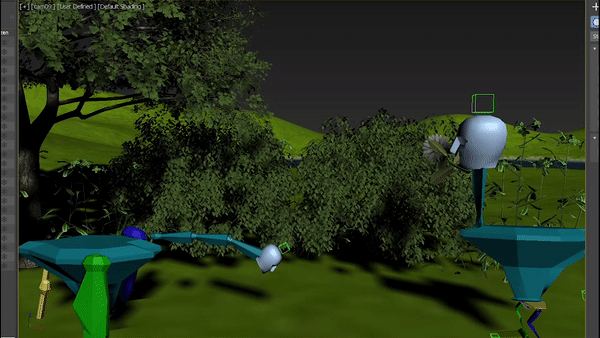

Leonor Rodrigues
Work
Drawings
Video
2D and 3D Animation/ Modeling
About
Developed during 10th grade and using the program Blender, this project's aim was to recreate something inspired by an artist; mine turned out to be Salvador Dali.
This modelation project's purpose was to practice since I had been recently introduced to the program 3DS Max, in 11th grade.

As a part of my final project of 3D animation from 11th grade, I created a storyline starring a shy goose that has trouble making friends and a brave duck that welcomes him into it's group. Click
here
to watch the unfinished full version.
As a 2D animation group project, me and 2 other colleagues each animated a segment of a reference video and when it all came together, we ended up with a very unique video that you can watch clicking
here
.
A very small/ simple GIF developed for a philosophy presentation, whose goal was to bring awareness to animal testing and violence.
One of my favorite projects that I've done, using a reference video of one of my best friends dancing as the background shows "Ducks are Cool". (Mute or unmute the video pressing the button bellow.)
Mute/Unmute